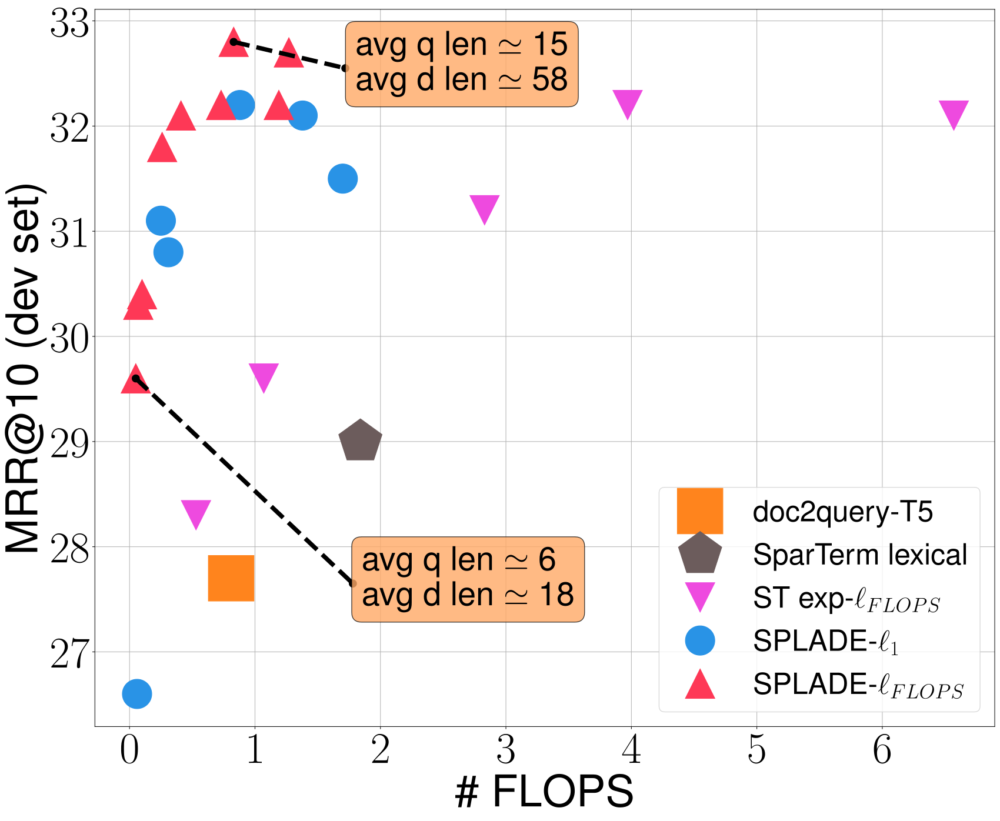

SPLADE: Sparse Lexical and Expansion Model for First Stage Ranking / 全文中英对照¶
来源：arXiv:2107.05720v1。英文段落后紧接中文，覆盖所取 HTML 版本的主文、附录、图表、脚注与参考文献；公式、数字表和书目信息共用。中文以机器初译为底稿，进行了术语整理与结构核对，尚未逐句人工审定；遇到歧义请以紧邻英文和原论文为准。 原作版权归所列作者，许可见 原作许可；中文译文与版式改写在该许可条件下提供（涉及 SA 时沿用相同许可，涉及 NC 时仅限非商业使用）。
Authors and affiliations / 作者与机构¶
Thibault Formal Affiliation: Naver Labs Europe , Meylan , France Affiliation: Sorbonne Université, LIP6 , Paris , France email: thibault.formal@naverlabs.com , Benjamin Piwowarski Affiliation: Sorbonne Université, CNRS, LIP6 , Paris , France email: benjamin.piwowarski@lip6.fr and Stéphane Clinchant Affiliation: Naver Labs Europe , Meylan , France email: stephane.clinchant@naverlabs.com
Abstract. / 摘要。¶
EN. In neural Information Retrieval, ongoing research is directed towards improving the first retriever in ranking pipelines. Learning dense embeddings to conduct retrieval using efficient approximate nearest neighbors methods has proven to work well. Meanwhile, there has been a growing interest in learning sparse representations for documents and queries, that could inherit from the desirable properties of bag-of-words models such as the exact matching of terms and the efficiency of inverted indexes. In this work, we present a new first-stage ranker based on explicit sparsity regularization and a log-saturation effect on term weights, leading to highly sparse representations and competitive results with respect to state-of-the-art dense and sparse methods. Our approach is simple, trained end-to-end in a single stage. We also explore the trade-off between effectiveness and efficiency, by controlling the contribution of the sparsity regularization.
中. 在神经信息检索中，正在进行的研究旨在改进排名管道中的第一个检索器。事实证明，学习密集嵌入以使用有效的近似最近邻方法进行检索效果良好。与此同时，人们对学习文档和查询的稀疏表示越来越感兴趣，这可以继承词袋模型的理想属性，例如术语的精确匹配和倒排索引的效率。在这项工作中，我们提出了一种基于显式稀疏正则化和项权重对数饱和效应的新的第一阶段排序器，从而获得高度稀疏的表示和相对于最先进的密集和稀疏方法的竞争结果。我们的方法很简单，在一个阶段进行端到端的训练。我们还通过控制稀疏正则化的贡献来探索有效性和效率之间的权衡。
Keywords: / 关键词：¶
EN. neural networks, indexing, sparse representations, regularization
中. 神经网络、索引、稀疏表示、正则化
Introduction / 一、简介¶
EN. The release of large pre-trained language models like BERT ( Devlin et al., 2018 ) has shaken-up Natural Language Processing and Information Retrieval. These models have shown a strong ability to adapt to various tasks by simple fine-tuning. At the beginning of 2019, Nogueira and Cho ( Nogueira and Cho, 2019 ) achieved state-of-the-art results – by a large margin – on the MS MARCO passage re-ranking task, paving the way for LM-based neural ranking models. Because of strict efficiency requirements, these models have initially been used as re-rankers in a two-stage ranking pipeline, where first-stage retrieval – or candidate generation – is conducted with bag-of-words models (e.g. BM25) that rely on inverted indexes. While BOW models remain strong baselines ( Yang et al., 2019 ) , they suffer from the long standing vocabulary mismatch problem, where relevant documents might not contain terms that appear in the query. Thus, there have been attempts to substitute standard BOW approaches by learned (neural) rankers. Designing such models poses several challenges regarding efficiency and scalability: therefore there is a need for methods where most of the computation can be done offline and online inference is fast. Dense retrieval with approximate nearest neighbors search has shown impressive results ( Xiong et al., 2021 ; Lin et al., 2020 ; Ding et al., 2020 ) , but is still combined with BOW models because of its inability to explicitly model term matching. Hence, there has recently been a growing interest in learning sparse representations for queries and documents ( Zamani et al., 2018 ; Dai and Callan, 2019 ; Nogueira et al., 2019 ; Zhao et al., 2020 ; Bai et al., 2020 ) . By doing so, models can inherit from the desirable properties of BOW models like exact-match of (possibly latent) terms, efficiency of inverted indexes and interpretability. Additionally, by modeling implicit or explicit (latent, contextualized) expansion mechanisms – similarly to standard expansion models in IR – these models can reduce the vocabulary mismatch.
中. BERT（Devlin et al., 2018）等大型预训练语言模型的发布震撼了自然语言处理和信息检索。这些模型通过简单的微调就表现出了很强的适应各种任务的能力。 2019 年初，Nogueira 和 Cho (Nogueira and Cho, 2019) 在 MS MARCO 段落重排序任务上大幅取得了最先进的结果，为基于 LM 的神经排序模型铺平了道路。由于严格的效率要求，这些模型最初被用作两阶段排名管道中的重新排名器，其中第一阶段检索（或候选生成）是使用依赖倒排索引的词袋模型（例如 BM25）进行的。虽然 BOW 模型仍然具有强大的基线（Yang et al., 2019），但它们遭受长期存在的词汇不匹配问题，即相关文档可能不包含查询中出现的术语。因此，有人尝试通过学习（神经）排名器来替代标准 BOW 方法。设计此类模型在效率和可扩展性方面提出了一些挑战：因此需要一种可以离线完成大部分计算并且在线推理速度很快的方法。近似最近邻搜索的稠密检索已经显示出令人印象深刻的结果（Xiong 等人，2021；Lin 等人，2020；Ding 等人，2020），但由于无法显式地建模术语匹配，因此仍与 BOW 模型结合使用。因此，最近人们对学习查询和文档的稀疏表示越来越感兴趣（Zamani et al., 2018；Dai and Callan, 2019；Nogueira et al., 2019；Zhao et al., 2020；Bai et al., 2020）。通过这样做，模型可以继承 BOW 模型的理想属性，例如（可能是潜在的）项的精确匹配、倒排索引的效率和可解释性。此外，通过对隐式或显式（潜在的、上下文化的）扩展机制进行建模（类似于 IR 中的标准扩展模型），这些模型可以减少词汇不匹配。
EN. The contributions of this paper are threefold: (1) we build upon SparTerm ( Bai et al., 2020 ) , and show that a mild tuning of hyperparameters brings improvements that largely outperform the results reported in the original paper; (2) we propose the SParse Lexical AnD Expansion (SPLADE) model, based on a logarithmic activation and sparse regularization. SPLADE performs an efficient document expansion ( Bai et al., 2020 ; MacAvaney et al., 2020 ) , with competitive results with respect to complex training pipelines for dense models like ANCE ( Xiong et al., 2021 ) ; (3) finally, we show how the sparsity regularization can be controlled to influence the trade-off between efficiency (in terms of the number of floating-point operations) and effectiveness.
中. 本文的贡献有三个方面：（1）我们以 SparTerm（Bai 等人，2020）为基础，并表明对超参数的温和调整带来的改进在很大程度上优于原始论文中报告的结果； (2) 我们提出了基于对数激活和稀疏正则化的 SParse Lexical AnD Expansion (SPLADE) 模型。 SPLADE 执行有效的文档扩展（Bai 等人，2020；MacAvaney 等人，2020），在 ANCE 等密集模型的复杂训练管道方面具有竞争性结果（Xiong 等人，2021）； (3)最后，我们展示了如何控制稀疏正则化来影响效率（就浮点运算的数量而言）和有效性之间的权衡。
Related Works / 相关作品¶
EN. Dense retrieval based on BERT Siamese models ( Reimers and Gurevych, 2019 ) has become the standard approach for candidate generation in Question Answering and IR ( Guu et al., 2020 ; Karpukhin et al., 2020 ; Xiong et al., 2020 ; Lin et al., 2020 ; Ding et al., 2020 ) . While the backbone of these models remains the same, recent works highlight the critical aspects of the training strategy to obtain state-of-the-art results, ranging from improved negative sampling ( Xiong et al., 2020 ; Ding et al., 2020 ) to distillation ( Hofstätter et al., 2020 ; Lin et al., 2020 ) . ColBERT ( Khattab and Zaharia, 2020 ) pushes things further: the postponed token-level interactions allow to efficiently apply the model for first-stage retrieval, benefiting of the effectiveness of modeling fine-grained interactions, at the cost of storing embeddings for each (sub)term – raising concerns about the actual scalability of the approach for large collections. To the best of our knowledge, very few studies have discussed the impact of using approximate nearest neighbors (ANN) search on IR metrics ( Boytsov, 2018 ; Tu et al., 2020 ) . Due to the moderate size of the MS MARCO collection, results are usually reported with an exact , brute-force search, therefore giving no indication on the effective computing cost.
中. 基于 BERT Siamese 模型的稠密检索（Reimers 和 Gurevych，2019）已成为问答和 IR 中候选生成的标准方法（Guu 等，2020；Karpukhin 等，2020；Xiong 等，2020；Lin 等，2020；Ding 等，2020）。虽然这些模型的主干保持不变，但最近的工作强调了获得最先进结果的训练策略的关键方面，从改进的负采样（Xiong et al., 2020；Ding et al., 2020）到蒸馏（Hofstätter et al., 2020；Lin et al., 2020）。 ColBERT（Khattab 和 Zaharia，2020）进一步推动了事情的发展：推迟的令牌级交互允许有效地将模型应用于第一阶段检索，受益于建模细粒度交互的有效性，但代价是存储每个（子）项的嵌入 - 引发了人们对该方法针对大型集合的实际可扩展性的担忧。据我们所知，很少有研究讨论使用近似最近邻 (ANN) 搜索对 IR 指标的影响（Boytsov，2018；Tu et al.，2020）。由于 MS MARCO 集合的规模适中，因此通常通过精确的强力搜索来报告结果，因此没有给出有效计算成本的指示。
EN. An alternative to dense indexes is term-based ones. Building on standard BOW models, Zamani et al. first introduced SNRM ( Zamani et al., 2018 ) : the model embeds documents and queries in a sparse high-dimensional latent space by means of \(\ell_{1}\) regularization on representations. However, SNRM effectiveness remains limited and its efficiency has been questioned ( Paria et al., 2020 ) . More recently, there have been attempts to transfer the knowledge from pre-trained LM to sparse approaches. Based on BERT, DeepCT ( Dai and Callan, 2019 ; Dai and Callan, 2020a ; Dai and Callan, 2020b ) focused on learning contextualized term weights in the full vocabulary space – akin to BOW term weights. However, as the vocabulary associated with a document remains the same, this type of approach does not solve the vocabulary mismatch, as acknowledged by the use of query expansion for retrieval ( Dai and Callan, 2019 ) . A first solution to this problem consists in expanding documents using generative approaches such as doc2query ( Nogueira et al., 2019 ) and docTTTTTquery ( Nogueira and Lin, 2019 ) to predict expansion words for documents. The document expansion adds new terms to documents – hence fighting the vocabulary mismatch – as well as repeats existing terms, implicitly performing re-weighting by boosting important terms. These methods are however limited by the way they are trained (predicting queries), which is indirect in nature and limit their progress. A second solution to this problem, that has been chosen by recent works such as ( Bai et al., 2020 ; MacAvaney et al., 2020 ; Zhao et al., 2020 ) , is to estimate the importance of each term of the vocabulary implied by each term of the document, i.e. to compute an interaction matrix between the document or query tokens and all the tokens from the vocabulary. This is followed by an aggregation mechanism (roughly sum for SparTerm ( Bai et al., 2020 ) , max for EPIC ( MacAvaney et al., 2020 ) and SPARTA ( Zhao et al., 2020 ) ), that allows to compute an importance weight for each term of the vocabulary, for the full document or query. However, EPIC and SPARTA (document) representations are not sparse enough by construction – unless resorting on top- \(k\) pooling – contrary to SparTerm, for which fast retrieval is thus possible. Furthermore, the latter does not include (like SNRM) an explicit sparsity regularization, which hinders its performance. Our SPLADE model relies on such regularization, as well as other key changes, that boost both the efficiency and the effectiveness of this type of models.
中. 密集索引的替代方案是基于术语的索引。 Zamani 等人以标准 BOW 模型为基础。首先引入了 SNRM（Zamani et al., 2018）：该模型通过对表示的 \(\ell_{1}\) 正则化将文档和查询嵌入稀疏高维潜在空间中。然而，SNRM 的有效性仍然有限，其效率受到质疑（Paria et al., 2020）。最近，有人尝试将知识从预训练的 LM 转移到稀疏方法。基于 BERT，DeepCT（Dai 和 Callan，2019；Dai 和 Callan，2020a；Dai 和 Callan，2020b）专注于学习完整词汇空间中的上下文化术语权重——类似于 BOW 术语权重。然而，由于与文档关联的词汇保持不变，这种方法并不能解决词汇不匹配的问题，正如使用查询扩展进行检索所承认的那样（Dai 和 Callan，2019）。该问题的第一个解决方案包括使用生成方法（例如 doc2query（Nogueira 等人，2019）和 docTTTTTquery（Nogueira 和 Lin，2019））来扩展文档来预测文档的扩展词。文档扩展向文档添加了新术语，从而解决了词汇不匹配的问题，并重复现有术语，通过提升重要术语隐式地执行重新加权。然而，这些方法受到训练方式（预测查询）的限制，训练方式本质上是间接的，限制了它们的进展。该问题的第二种解决方案是最近的著作（Bai et al., 2020；MacAvaney et al., 2020；Zhao et al., 2020）选择的，是估计文档的每个术语所隐含的词汇表中的每个术语的重要性，即计算文档或查询标记与词汇表中的所有标记之间的交互矩阵。接下来是聚合机制（SparTerm 的粗略求和（Bai et al., 2020），EPIC 的最大值（MacAvaney et al., 2020）和 SPARTA（Zhao et al., 2020）），允许为完整文档或查询计算词汇表中每个术语的重要性权重。然而，EPIC 和 SPARTA（文档）表示在构造上不够稀疏——除非采用顶部 \(k\) 池化——这与 SparTerm 相反，因此可以进行快速检索。此外，后者不包括（如 SNRM）显式稀疏正则化，这会影响其性能。我们的 SPLADE 模型依赖于这种正则化以及其他关键变化，从而提高了此类模型的效率和有效性。
Sparse Lexical representations for first-stage ranking / 第一阶段排名的稀疏词汇表示¶
EN. In this section, we first describe in details the SparTerm model ( Bai et al., 2020 ) , before presenting our model named SPLADE.
中. 在本节中，我们首先详细描述 SparTerm 模型（Bai 等人，2020），然后介绍我们名为 SPLADE 的模型。
SparTerm / 3.1.斯帕术语¶
EN. SparTerm predicts term importance – in BERT WordPiece vocabulary ( \(|V|=30522\) ) – based on the logits of the Masked Language Model (MLM) layer. More precisely, let us consider an input query or document sequence (after WordPiece tokenization) \(t=(t_{1},t_{2},...,t_{N})\) , and its corresponding BERT embeddings \((h_{1},h_{2},...,h_{N})\) . We consider the importance \(w_{ij}\) of the token \(j\) (vocabulary) for a token \(i\) (of the input sequence):
中. SparTerm 预测 BERT WordPiece 词汇中的术语重要性（\(|V|=30522\)) – 基于屏蔽语言模型 (MLM) 层的 logits。更准确地说，让我们考虑输入查询或文档序列（在 WordPiece 标记化之后）\(t=(t_{1},t_{2},...,t_{N})\)，及其相应的 BERT 嵌入\((h_{1},h_{2},...,h_{N})\)。我们考虑重要性\(w_{ij}\)代币的\(j\)（词汇）令牌\(i\)（输入序列）：
EN. where \(E_{j}\) denotes the BERT input embedding for token \(j\) , \(b_{j}\) is a token-level bias, and transform \((.)\) is a linear layer with GeLU activation and LayerNorm. Note that Eq. 1 is equivalent to the MLM prediction, thus it can be also be initialized from a pre-trained MLM model. The final representation is then obtained by summing importance predictors over the input sequence tokens, after applying ReLU to ensure the positivity of term weights:
中. 其中 \(E_{j}\) 表示 token \(j\) 的 BERT 输入嵌入，\(b_{j}\) 是 token 级偏差，变换 \((.)\) 是具有 GeLU 激活和 LayerNorm 的线性层。请注意等式。 1相当于MLM预测，因此它也可以从预先训练的MLM模型中初始化。在应用 ReLU 确保项权重的正性之后，通过对输入序列标记的重要性预测因子求和来获得最终表示：
EN. where \(g_{j}\) is a binary mask (gating) described latter. The above equation can be seen as a form of query/document expansion , as observed in ( Bai et al., 2020 ; MacAvaney et al., 2020 ) , since for each token of the vocabulary the model predicts a new weight \(w_{j}\) . SparTerm ( Bai et al., 2020 ) introduces two sparsification schemes that turn off a large amount of dimensions in query and document representations, allowing to efficiently retrieve from an inverted index:
中. 其中 \(g_{j}\) 是后面描述的二进制掩码（门控）。上面的等式可以看作是查询/文档扩展的一种形式，如（Bai et al., 2020；MacAvaney et al., 2020）中观察到的，因为对于词汇表的每个标记，模型预测一个新的权重 \(w_{j}\) 。 SparTerm（Bai et al., 2020）引入了两种稀疏化方案，可以关闭查询和文档表示中的大量维度，从而可以有效地从倒排索引中检索：
EN. lexical-only is a BOW masking, i.e. \(g_{j}=1\) if token \(j\) appears in \(t\) , and 0 otherwise;
中. lexical-only 是一个 BOW 掩码，即 \(g_{j}=1\) 如果标记 \(j\) 出现在 \(t\) 中，否则为 0；
EN. expansion-aware is a lexical/expansion-aware binary gating mechanism, where \(g_{j}\) is learned . To preserve the original input, it is forced to 1 if the token \(j\) appears in \(t\) .
中. 扩展感知是一种词法/扩展感知的二进制门控机制，其中学习 \(g_{j}\) 。为了保留原始输入，如果标记 \(j\) 出现在 \(t\) 中，则强制为 1。
EN. Let \(s(q,d)\) denote the ranking score obtained via dot product between \(q\) and \(d\) representations from Eq. ( 2 ). Given a query \(q_{i}\) , a positive document \(d_{i}^{+}\) and a negative document \(d_{i}^{-}\) , SparTerm is trained by minimzing the following loss:
中. 让 \(s(q,d)\) 表示通过等式 1 的 \(q\) 和 \(d\) 表示之间的点积获得的排名分数。 （2）。给定查询 \(q_{i}\) 、正文档 \(d_{i}^{+}\) 和负文档 \(d_{i}^{-}\) ，SparTerm 通过最小化以下损失进行训练：
Limitations / 局限性¶
EN. SparTerm expansion-aware gating is somewhat intricate, and the model cannot be trained end-to-end: the gating mechanism is learned beforehand, and fixed while fine-tuning the matching model with \(\mathcal{L}_{rank}\) , therefore preventing the model to learn the optimal sparsification strategy for the ranking task. Moreover, the two lexical and expansion-aware strategies do perform almost equally well, questioning the actual benefits of expansion.
中. SparTerm 扩展感知门控有些复杂，模型无法进行端到端训练：门控机制是预先学习的，并在使用 \(\mathcal{L}_{rank}\) 微调匹配模型时进行修复，因此阻止模型学习排序任务的最佳稀疏化策略。此外，这两种词法和扩展感知策略的表现几乎同样好，这对扩展的实际好处提出了质疑。
SPLADE: SParse Lexical AnD Expansion model / SPLADE：稀疏词法扩展模型¶
EN. In the following, we propose slight, but essential changes to the SparTerm model that dramatically improve its performance.
中. 接下来，我们建议对 SparTerm 模型进行一些细微但重要的更改，以显着提高其性能。
Model / 型号¶
EN. We introduce a minor change in the importance estimation from Eq. 2 , by introducing a log-saturation effect which prevents some terms to dominate and naturally ensures sparsity in representations:
中. 我们对等式的重要性估计进行了微小的改变。 2，通过引入对数饱和效应，防止某些项占主导地位并自然确保表示的稀疏性：
EN. While it is intuitive that using a log-saturation prevents some terms from dominating – drawing a parallel with axiomatic approaches in IR and \(\log\) (tf) models ( Fang et al., 2004 ) – the implied sparsity can seem surprising at first, but, according to our experiments, it obtains better experimental results and allows already to obtain sparse solutions without any regularization .
中. 虽然直观上使用对数饱和可以防止某些项占主导地位 - 与 IR 和 \(\log\) (tf) 模型中的公理方法相提并论 (Fang et al., 2004) - 隐含的稀疏性乍一看似乎令人惊讶，但是根据我们的实验，它获得了更好的实验结果，并且已经允许在没有任何正则化的情况下获得稀疏解。
Ranking loss / 排名损失¶
EN. Given a query \(q_{i}\) in a batch, a positive document \(d_{i}^{+}\) , a (hard) negative document \(d_{i}^{-}\) (e.g. coming from BM25 sampling), and a set of negative documents in the batch (positive documents from other queries) \(\{d_{i,j}^{-}\}_{j}\) , we consider the ranking loss from ( Ding et al., 2020 ) , which can be interpreted as the maximization of the probability of the document \(d_{i}^{+}\) being relevant among the documents \(d_{i}^{+},d_{i}^{-}\) and \(\{d_{i,j}^{-}\}\) :
中. 给定一个批次中的查询 \(q_{i}\) 、一个正文档 \(d_{i}^{+}\) 、一个（硬）负文档 \(d_{i}^{-}\) （例如来自 BM25 采样）以及该批次中的一组负文档（来自其他查询的正文档） \(\{d_{i,j}^{-}\}_{j}\) ，我们考虑来自（ Ding et al., 2020 ）的排名损失，可以解释为文档 \(d_{i}^{+}\) 在文档 \(d_{i}^{+},d_{i}^{-}\) 和 \(\{d_{i,j}^{-}\}\) 之间相关的概率的最大化：
EN. The in-batch negatives (IBN) sampling strategy is widely used for training image retrieval models, and has shown to be effective in learning first-stage rankers ( Karpukhin et al., 2020 ; Ding et al., 2020 ; Lin et al., 2020 ) .
中. 批量负样本（IBN）采样策略广泛用于训练图像检索模型，并且已被证明在学习第一阶段排序器方面是有效的（Karpukhin et al., 2020; Ding et al., 2020; Lin et al., 2020）。
Learning sparse representations / 学习稀疏表示¶
EN. The idea of learning sparse representations for first-stage retrieval dates back to SNRM ( Zamani et al., 2018 ) , via \(\ell_{1}\) regularization. Later, ( Paria et al., 2020 ) pointed-out that minimizing the \(\ell_{1}\) norm of representations does not result in the most efficient index, as nothing ensures that posting lists are evenly distributed. Note that this is even more true for standard indexes due to the Zipfian nature of the term frequency distribution. To obtain a well-balanced index, Paria et al. ( Paria et al., 2020 ) introduce the FLOPS regularizer, a smooth relaxation of the average number of floating-point operations necessary to compute the score of a document, and hence directly related to the retrieval time. It is defined using \(a_{j}\) as a continuous relaxation of the activation (i.e. the term has a non zero weight) probability \(p_{j}\) for token \(j\) , and estimated for documents \(d\) in a batch of size \(N\) by \(\bar{a}_{j}=\frac{1}{N}\sum_{i=1}^{N}w^{(d_{i})}_{j}\) . This gives the following regularization loss
中. 学习第一阶段检索的稀疏表示的想法可以追溯到 SNRM（Zamani 等人，2018），通过 \(\ell_{1}\) 正则化。后来，（Paria et al., 2020）指出，最小化表示的 \(\ell_{1}\) 范数并不会产生最有效的索引，因为没有什么可以确保发布列表均匀分布。请注意，由于术语频率分布的 Zipfian 性质，对于标准索引来说更是如此。为了获得一个均衡的指数，Paria 等人。 （Paria 等人，2020）引入了 FLOPS 正则化器，它是计算文档分数所需的平均浮点运算次数的平滑松弛，因此与检索时间直接相关。它使用 \(a_{j}\) 定义为令牌 \(j\) 的激活的连续松弛（即该术语具有非零权重）概率 \(p_{j}\) ，并通过 \(\bar{a}_{j}=\frac{1}{N}\sum_{i=1}^{N}w^{(d_{i})}_{j}\) 对一批大小为 \(N\) 的文档 \(d\) 进行估计。这给出了以下正则化损失
EN. This differs from the \(\ell_{1}\) regularization used in SNRM ( Zamani et al., 2018 ) where the \({\bar{a}}_{j}\) are not squared: using \(\ell_{\texttt{FLOPS}}\) thus pushes down high average term weight values, giving rise to a more balanced index.
中. 这与 SNRM 中使用的 \(\ell_{1}\) 正则化不同（Zamani 等人，2018），其中 \({\bar{a}}_{j}\) 不是平方的：因此使用 \(\ell_{\texttt{FLOPS}}\) 可以降低较高的平均术语权重值，从而产生更平衡的指数。
Overall loss / 整体亏损¶
EN. We propose to combine the best of both worlds for end-to-end training of sparse, expansion-aware representations of documents and queries. Thus, we discard the binary gating in SparTerm, and instead learn our log-saturated model (Eq. 4 ) by jointly optimizing ranking and regularization losses:
中. 我们建议结合两方面的优点，对文档和查询的稀疏、扩展感知表示进行端到端训练。因此，我们放弃了 SparTerm 中的二元门控，而是通过联合优化排名和正则化损失来学习我们的对数饱和模型（方程 4）：
EN. where \(\mathcal{L}_{\texttt{reg}}\) is a sparse regularization ( \(\ell_{1}\) or \(\ell_{\texttt{FLOPS}}\) ). We use two distinct regularization weights ( \(\lambda_{d}\) and \(\lambda_{q}\) ) for queries and documents – allowing to put more pressure on the sparsity for queries, which is critical for fast retrieval.
中. 其中 \(\mathcal{L}_{\texttt{reg}}\) 是稀疏正则化（ \(\ell_{1}\) 或 \(\ell_{\texttt{FLOPS}}\) ）。我们对查询和文档使用两种不同的正则化权重（ \(\lambda_{d}\) 和 \(\lambda_{q}\) ）——允许对查询的稀疏性施加更大的压力，这对于快速检索至关重要。
Experimental setting and results / 实验设置和结果¶
EN. We trained and evaluated our models on the MS MARCO passage ranking dataset 1 in the full ranking setting. The dataset contains approximately \(8.8\) M passages, and hundreds of thousands training queries with shallow annotation ( \(\approx 1.1\) relevant passages per query in average). The development set contains \(6980\) queries with similar labels, while the TREC DL 2019 evaluation set provides fine-grained annotations from human assessors for a set of \(43\) queries ( Craswell et al., 2020 ) .
中. 我们在 MS MARCO 通道排名数据集 1 上在完整排名设置中训练和评估我们的模型。该数据集包含大约 \(8.8\) M 个段落，以及数十万个带有浅层注释的训练查询（平均每个查询有 \(\approx 1.1\) 相关段落）。开发集包含具有相似标签的 \(6980\) 查询，而 TREC DL 2019 评估集为一组 \(43\) 查询提供来自人类评估者的细粒度注释（Craswell 等人，2020）。
Training, indexing and retrieval / 训练、索引和检索¶
EN. We initialized the models with the BERT-base checkpoint. Models are trained with the ADAM optimizer, using a learning rate of \(2e^{-5}\) with linear scheduling and a warmup of \(6000\) steps, and a batch size of \(124\) . We keep the best checkpoint using MRR@10 on a validation set of \(500\) queries, after training for \(150\) k iterations (note that this is not optimal, as we validate on a re-ranking task). We consider a maximum length of \(256\) for input sequences. In order to mitigate the contribution of the regularizer at the early stages of training, we follow ( Paria et al., 2020 ) and use a scheduler for \(\lambda\) , quadratically increasing \(\lambda\) at each training iteration, until a given step ( \(50\) k in our case), from which it remains constant. Typical values for \(\lambda\) fall between \(1e^{-1}\) and \(1e^{-4}\) . For storing the index, we use a custom implementation based on Python arrays, and we rely on Numba ( Lam et al., 2015 ) to parallelize retrieval. Models 2 are trained using PyTorch ( Paszke et al., 2019 ) and HuggingFace transformers ( Wolf et al., 2020 ) , on \(4\) Tesla \(V100\) GPUs with \(32\) GB memory.
中. 我们使用基于 BERT 的检查点初始化模型。模型使用 ADAM 优化器进行训练，使用 \(2e^{-5}\) 的学习率和线性调度、\(6000\) 步骤的预热以及 \(124\) 的批量大小。在训练 \(150\) k 次迭代后，我们在 \(500\) 查询的验证集上使用 MRR@10 保留最佳检查点（请注意，这不是最佳的，因为我们在重新排序任务上进行验证）。我们考虑输入序列的最大长度为 \(256\)。为了减轻训练早期阶段正则化器的贡献，我们遵循（Paria et al., 2020）并使用 \(\lambda\) 的调度程序，在每次训练迭代中二次增加 \(\lambda\) ，直到给定的步骤（在我们的例子中为 \(50\) k ），从该步骤开始它保持不变。 \(\lambda\) 的典型值介于 \(1e^{-1}\) 和 \(1e^{-4}\) 之间。为了存储索引，我们使用基于 Python 数组的自定义实现，并依靠 Numba (Lam et al., 2015) 来并行化检索。模型 2 使用 PyTorch（Paszke 等人，2019）和 HuggingFace 转换器（Wolf 等人，2020）在具有 \(32\) GB 内存的 \(4\) Tesla \(V100\) GPU 上进行训练。
Evaluation / 评价¶
EN. We report Recall@1000 for both datasets, as well as the official metrics MRR@10 and NDCG@10 for MS MARCO dev set and TREC DL 2019 respectively. Since we are essentially interested in the first retrieval step, we do not consider re-rankers based on BERT, and we compare our approach to first stage rankers only – results reported on the MS MARCO leaderboard are thus not comparable to the results presented here. We compare to the following sparse approaches (1) BM25 (2) DeepCT ( Dai and Callan, 2019 ) (3) doc2query-T5 ( Nogueira and Lin, 2019 ) (4) and SparTerm ( Bai et al., 2020 ) , as well as state-of-the-art dense approaches ANCE ( Xiong et al., 2020 ) and TCT-ColBERT ( Lin et al., 2020 ) . We report the results from the original papers. We include a pure lexical SparTerm trained with our ranking pipeline (ST lexical-only). To illustrate the benefits of the log-saturation, we add results for models trained using Eq. ( 2 ) instead of Eq. ( 4 ) (ST exp- \(\ell_{1}\) and ST exp- \(\ell_{\texttt{FLOPS}}\) ). For sparse models, we indicate an estimation of the average number of floating-point operations between a query and a document in Table 1 , when available, which is defined as the expectation \(\mathbb{E}_{q,d}\left[\sum_{j\in V}p_{j}^{(q)}p_{j}^{(d)}\right]\) where \(p_{j}\) is the activation probability for token \(j\) in a document \(d\) or a query \(q\) . It is empirically estimated from a set of approximately \(100\) k development queries, on the MS MARCO collection.
中. 我们报告了两个数据集的 Recall@1000，以及分别针对 MS MARCO 开发集和 TREC DL 2019 的官方指标 MRR@10 和 NDCG@10。由于我们本质上对第一个检索步骤感兴趣，因此我们不考虑基于 BERT 的重新排序器，并且我们仅将我们的方法与第一阶段排序器进行比较 - 因此 MS MARCO 排行榜上报告的结果与此处提供的结果不可比较。我们比较以下稀疏方法 (1) BM25 (2) DeepCT ( Dai and Callan, 2019 ) (3) doc2query-T5 ( Nogueira and Lin, 2019 ) (4) 和 SparTerm ( Bai et al., 2020 ) ，以及最先进的密集方法 ANCE ( Xiong et al., 2020 ) 和 TCT-ColBERT ( Lin et al., 2020 )等，2020）。我们报告原始论文的结果。我们包含一个使用我们的排名管道（仅 ST 词汇）进行训练的纯词汇 SparTerm。为了说明对数饱和度的好处，我们添加了使用等式训练的模型的结果。 (2) 代替式(2) ( 4 ) (ST exp-\(\ell_{1}\) 和 ST exp-\(\ell_{\texttt{FLOPS}}\))。对于稀疏模型，我们在表 1 中指示了查询和文档之间的平均浮点操作数的估计（如果可用），其定义为期望 \(\mathbb{E}_{q,d}\left[\sum_{j\in V}p_{j}^{(q)}p_{j}^{(d)}\right]\)，其中 \(p_{j}\) 是文档 \(d\) 或查询 \(q\) 中标记 \(j\) 的激活概率。它是根据 MS MARCO 集合上一组大约 \(100\) k 的开发查询进行经验估计的。
EN. Results are given in Table 1 . Overall, we observe that: (1) our models outperform the other sparse retrieval methods by a large margin (except for recall@1000 on TREC DL); (2) the results are competitive with state-of-the-art dense retrieval methods.
中. 结果如表1所示。总体而言，我们观察到：（1）我们的模型大幅优于其他稀疏检索方法（TREC DL 上的recall@1000 除外）； （2）结果与最先进的稠密检索方法具有竞争力。
EN. More specifically, our training method for ST lexical-only already outperforms the results of DeepCT as well as the results reported in the original SparTerm paper – including the model using expansion. Thanks to the additional sparse expansion mechanism, we are able to obtain results on par with state-of-the-art dense approaches on MS MARCO dev set (e.g. Recall@1000 close to \(0.96\) for ST exp- \(\ell_{1}\) ), but with a much bigger average number of FLOPS.
中. 更具体地说，我们的仅 ST 词汇训练方法已经优于 DeepCT 的结果以及原始 SparTerm 论文中报告的结果 - 包括使用扩展的模型。得益于额外的稀疏扩展机制，我们能够在 MS MARCO 开发集上获得与最先进的密集方法相当的结果（例如，Recall@1000 接近 ST exp- \(\ell_{1}\) 的 \(0.96\) ），但平均 FLOPS 数要大得多。
EN. By adding a log-saturation effect to the expansion model, SPLADE greatly increases sparsity – reducing the FLOPS to similar levels than BOW approaches – at no cost on performance when compared to the best first-stage rankers. In addition, we observe the advantage of the FLOPS regularization over \(\ell_{1}\) in order to decrease the computing cost. Note that in contrast to SparTerm, SPLADE is trained end-to end in a single step. It is also remarkably simple, compared to dense state-of-the-art baselines such as ANCE ( Xiong et al., 2020 ) , and avoids resorting to approximate neighbors search, whose impact on IR metrics has not been fully evaluated yet.
中. 通过在扩展模型中添加对数饱和效应，SPLADE 极大地提高了稀疏性 - 将 FLOPS 降低到与 BOW 方法类似的水平 - 与最好的第一阶段排名器相比，性能没有任何损失。此外，我们观察到 FLOPS 正则化相对于 \(\ell_{1}\) 的优势，可以降低计算成本。请注意，与 SparTerm 相比，SPLADE 在单个步骤中进行端到端训练。与 ANCE（Xiong 等人，2020）等最先进的密集基线相比，它也非常简单，并且避免诉诸近似邻居搜索，后者对 IR 指标的影响尚未得到充分评估。
| model 型号 |
MS MARCO dev MS MARCO 开发者 |
MS MARCO dev MS MARCO 开发者 |
TREC DL 2019 | TREC DL 2019 | FLOPS 浮点运算次数 |
|---|---|---|---|---|---|
| MRR@10 | R@1000 | NDCG@10 | R@1000 | ||
| Dense retrieval 稠密检索 |
|||||
| Siamese (ours) 暹罗（我们的） |
0.312 | 0.941 | 0.637 | 0.711 | - |
| ANCE ( Xiong et al., 2020 ) ANCE（熊等人，2020） |
0.330 | 0.959 | 0.648 | - | - |
| TCT-ColBERT ( Lin et al., 2020 ) TCT-ColBERT（Lin 等人，2020） |
0.335 | 0.964 | 0.670 | 0.720 | - |
| Sparse retrieval 稀疏检索 |
|||||
| BM25 | 0.184 | 0.853 | 0.506 | 0.745 | 0.13 |
| DeepCT ( Dai and Callan, 2019 ) DeepCT（Dai 和 Callan，2019） |
0.243 | 0.913 | 0.551 | 0.756 | - |
| doc2query-T5 ( Nogueira and Lin, 2019 ) doc2query-T5（Nogueira 和 Lin，2019） |
0.277 | 0.947 | 0.642 | 0.827 | 0.81 |
| ST lexical-only ( Bai et al., 2020 ) 仅 ST 词汇（Bai et al., 2020） |
0.275 | 0.912 | - | - | - |
| ST expansion ( Bai et al., 2020 ) ST 扩展（Bai et al., 2020） |
0.279 | 0.925 | - | - | - |
| Our methods 我们的方法 |
|||||
| ST lexical-only 仅 ST 词汇 |
0.290 | 0.923 | 0.595 | 0.774 | 1.84 |
| ST exp- \(\ell_{1}\) | 0.314 | 0.959 | 0.668 | 0.800 | 4.62 |
| ST exp- \(\ell_{\texttt{FLOPS}}\) | 0.312 | 0.954 | 0.671 | 0.813 | 2.83 |
| SPLADE- \(\ell_{1}\) 斯普拉德-\(\ell_{1}\) |
0.322 | 0.954 | 0.667 | 0.792 | 0.88 |
| SPLADE- \(\ell_{\texttt{FLOPS}}\) 斯普拉德-\(\ell_{\texttt{FLOPS}}\) |
0.322 | 0.955 | 0.665 | 0.813 | 0.73 |
EN. Table 1. Evaluation on MS MARCO passage retrieval (dev set) and TREC DL 2019
中. 表 1. MS MARCO 段落检索（开发集）和 TREC DL 2019 的评估

EN. Figure 1. Performance vs FLOPS for SPLADE models trained with different regularization strength \(\lambda\) on MS MARCO
中. 图 1. 在 MS MARCO 上使用不同正则化强度 \(\lambda\) 训练的 SPLADE 模型的性能与 FLOPS
Effectiveness-efficiency trade-off / 有效性与效率的权衡¶
EN. Figure 1 illustrates the trade-off between effectiveness (MRR@10) and efficiency (FLOPS), when we vary \(\lambda_{q}\) and \(\lambda_{d}\) (varying both implies that plots are not smooth). We observe that ST exp- \(\ell_{\texttt{FLOPS}}\) falls far behind BOW models and SPLADE in terms of efficiency. In the meantime, SPLADE reaches efficiency levels equivalent to sparse BOW models, while outperforming doc2query-T5. Interestingly, strongly regularized models still show competitive performance (e.g. FLOPS = \(0.05,\) MRR@10= \(0.296\) ). Finally, the regularization effect brought by \(\ell_{\texttt{FLOPS}}\) compared to \(\ell_{1}\) is clear: for the same level of efficiency, performance of the latter is always lower.
中. 图 1 说明了当我们改变 \(\lambda_{q}\) 和 \(\lambda_{d}\) 时有效性 (MRR@10) 和效率 (FLOPS) 之间的权衡（两者都变化意味着绘图不平滑）。我们观察到 ST exp- \(\ell_{\texttt{FLOPS}}\) 在效率方面远远落后于 BOW 模型和 SPLADE。与此同时，SPLADE 达到了与稀疏 BOW 模型相当的效率水平，同时优于 doc2query-T5。有趣的是，强正则化模型仍然表现出有竞争力的性能（例如 FLOPS = \(0.05,\) MRR@10= \(0.296\) ）。最后，与\(\ell_{1}\)相比，\(\ell_{\texttt{FLOPS}}\)带来的正则化效果很明显：在相同水平的效率下，后者的性能总是较低。
The role of expansion / 扩张的作用¶
EN. Experiments show that the expansion brings improvements w.r.t. to the purely lexical approach by increasing recall. Additionally, representations obtained from expansion-regularized models are sparser: the models learn how to balance expansion and compression, by both turning-off irrelevant dimensions and activating useful ones. On a set of \(10\) k documents, the SPLADE- \(\ell_{\texttt{FLOPS}}\) from Table 1 drops in average \(20\) terms per document, while adding \(32\) expansion terms. For one of our most efficient model ( FLOPS = \(0.05\) ), \(34\) terms are dropped in average, for only \(5\) new expansion terms. In this case, representations are extremely sparse: documents and queries contain in average \(18\) and \(6\) non-zero values respectively, and we need less that \(1.4\) GB to store the index on disk. Table 2 shows an example where the model performs term re-weighting by emphasizing on important terms and discarding most of the terms without information content. Expansion allows to enrich documents, either by implicitly adding stemming effects (legs \(\rightarrow\) leg) or by adding relevant topic words (e.g. treatment).
中. 实验表明，扩展带来了改进。通过增加回忆来转向纯粹的词汇方法。此外，从扩展正则化模型获得的表示更加稀疏：模型通过关闭不相关的维度和激活有用的维度来学习如何平衡扩展和压缩。在一组 \(10\) k 文档上，表 1 中的 SPLADE-\(\ell_{\texttt{FLOPS}}\) 降低了每个文档的平均 \(20\) 项，同时添加了 \(32\) 扩展项。对于我们最高效的模型之一（FLOPS = \(0.05\)），\(34\) 项平均下降，仅适用于 \(5\) 新扩展项。在这种情况下，表示非常稀疏：文档和查询平均分别包含 \(18\) 和 \(6\) 非零值，并且我们需要少于 \(1.4\) GB 来在磁盘上存储索引。表 2 显示了模型通过强调重要术语并丢弃大部分没有信息内容的术语来执行术语重新加权的示例。扩展允许通过隐式添加词干效果（腿 \(\rightarrow\) 腿）或添加相关主题词（例如治疗）来丰富文档。
| original document (doc ID: 7131647) 原始文档（文档 ID：7131647） |
|---|
| if (1.2) bow (2.56) legs (1.18) is caused (1.29) by (0.47) the bone (1.2) alignment (1.88) issue (0.87) than you may be able (0.29) to correct (1.37) through (0.43) bow legs correction (1.05) exercises . read more here.. if bow legs is caused by the bone alignment issue than you may be able to correct through bow legs correction exercises. 如果（1.2）弓形（2.56）腿（1.18）是由（0.47）骨骼（1.2）对齐（1.88）问题（0.87）引起（1.29），那么您可以（0.29）通过（0.43）弓形腿矫正（1.05）练习来纠正（1.37）。如果罗圈腿是由骨骼对齐问题引起的，那么您可以通过罗圈腿矫正练习来纠正。 |
| expansion terms 扩展条款 |
| (leg, 1.62) (arrow, 0.7) (exercise, 0.64) (bones, 0.63) (problem, 0.41) (treatment, 0.35) (happen, 0.29) (create, 0.22) (can, 0.14) (worse, 0.14) (effect, 0.08) (teeth, 0.06) (remove, 0.03) （腿，1.62）（箭头，0.7）（运动，0.64）（骨骼，0.63）（问题，0.41）（治疗，0.35）（发生，0.29）（创造，0.22）（可以，0.14）（更糟，0.14）（效果，0.08）（牙齿，0.06） （删除，0.03） |
EN. Table 2. Document and expansion terms: between parenthesis is the weight associated with the term – omitted for the second occurrence of the term in the document, and strike-through for zeros
中. 表 2. 文档和扩展术语：括号之间是与该术语相关的权重 – 文档中第二次出现该术语时省略，并删除零
Conclusion / 结论¶
EN. Recently, dense retrieval based on BERT has demonstrated its superiority for first-stage retrieval, questioning the competitiveness of traditional sparse models. In this work, we have proposed SPLADE, a sparse model revisiting query/document expansion. Our approach relies on in-batch negatives, logarithmic activation and FLOPS regularization to learn effective and efficient sparse representations. SPLADE is an appealing candidate for initial retrieval: it rivals the latest state-of-the-art dense retrieval models, its training procedure is straightforward, its sparsity/FLOPS can be controlled explicitly through the regularization, and it can operate on inverted indexes. In reason of its simplicity, SPLADE is a solid basis for further improvements in this line of research.
中. 最近，基于BERT的稠密检索展示了其第一阶段检索的优越性，质疑传统稀疏模型的竞争力。在这项工作中，我们提出了 SPLADE，一种重新审视查询/文档扩展的稀疏模型。我们的方法依赖于批量负数、对数激活和 FLOPS 正则化来学习有效且高效的稀疏表示。 SPLADE 是初始检索的一个有吸引力的候选者：它可以与最新最先进的稠密检索模型相媲美，其训练过程简单，其稀疏性/FLOPS 可以通过正则化显式控制，并且可以对倒排索引进行操作。由于其简单性，SPLADE 为进一步改进这一研究领域奠定了坚实的基础。
References / 参考文献¶
-
Bai et al . (2020) Yang Bai, Xiaoguang Li, Gang Wang, Chaoliang Zhang, Lifeng Shang, Jun Xu, Zhaowei Wang, Fangshan Wang, and Qun Liu. 2020. SparTerm: Learning Term-based Sparse Representation for Fast Text Retrieval. arXiv:2010.00768 [cs.IR]
-
Boytsov (2018) Leonid Boytsov. 2018. Efficient and Accurate Non-Metric k-NN Search with Applications to Text Matching . Ph.D. Dissertation. Carnegie Mellon University.
-
Craswell et al . (2020) Nick Craswell, Bhaskar Mitra, Emine Yilmaz, Daniel Campos, and Ellen M Voorhees. 2020. Overview of the trec 2019 deep learning track. arXiv preprint arXiv:2003.07820 (2020).
-
Dai and Callan (2019) Zhuyun Dai and Jamie Callan. 2019. Context-Aware Sentence/Passage Term Importance Estimation For First Stage Retrieval. arXiv:1910.10687 [cs.IR]
-
Dai and Callan (2020a) Zhuyun Dai and Jamie Callan. 2020a. Context-Aware Document Term Weighting for Ad-Hoc Search . Association for Computing Machinery, New York, NY, USA, 1897–1907. https://doi.org/10.1145/3366423.3380258
-
Dai and Callan (2020b) Zhuyun Dai and Jamie Callan. 2020b. Context-Aware Term Weighting For First Stage Passage Retrieval . Association for Computing Machinery, New York, NY, USA, 1533–1536. https://doi.org/10.1145/3397271.3401204
-
Devlin et al . (2018) Jacob Devlin, Ming-Wei Chang, Kenton Lee, and Kristina Toutanova. 2018. BERT: Pre-training of Deep Bidirectional Transformers for Language Understanding. CoRR abs/1810.04805 (2018). arXiv:1810.04805 http://arxiv.org/abs/1810.04805
-
Ding et al . (2020) Yingqi Qu Yuchen Ding, Jing Liu, Kai Liu, Ruiyang Ren, Xin Zhao, Daxiang Dong, Hua Wu, and Haifeng Wang. 2020. RocketQA: An Optimized Training Approach to Dense Passage Retrieval for Open-Domain Question Answering. arXiv:2010.08191 [cs.CL]
-
Fang et al . (2004) Hui Fang, Tao Tao, and ChengXiang Zhai. 2004. A Formal Study of Information Retrieval Heuristics. In Proceedings of the 27th Annual International ACM SIGIR Conference on Research and Development in Information Retrieval (Sheffield, United Kingdom) (SIGIR ’04) . Association for Computing Machinery, New York, NY, USA, 49–56. https://doi.org/10.1145/1008992.1009004
-
Guu et al . (2020) Kelvin Guu, Kenton Lee, Zora Tung, Panupong Pasupat, and Ming-Wei Chang. 2020. REALM: Retrieval-Augmented Language Model Pre-Training. arXiv:2002.08909 [cs.CL]
-
Hofstätter et al . (2020) Sebastian Hofstätter, Sophia Althammer, Michael Schröder, Mete Sertkan, and Allan Hanbury. 2020. Improving Efficient Neural Ranking Models with Cross-Architecture Knowledge Distillation. arXiv:2010.02666 [cs.IR]
-
Karpukhin et al . (2020) Vladimir Karpukhin, Barlas Oğuz, Sewon Min, Patrick Lewis, Ledell Wu, Sergey Edunov, Danqi Chen, and Wen tau Yih. 2020. Dense Passage Retrieval for Open-Domain Question Answering. arXiv:2004.04906 [cs.CL]
-
Khattab and Zaharia (2020) Omar Khattab and Matei Zaharia. 2020. ColBERT: Efficient and Effective Passage Search via Contextualized Late Interaction over BERT. In Proceedings of the 43rd International ACM SIGIR Conference on Research and Development in Information Retrieval (Virtual Event, China) (SIGIR ’20) . Association for Computing Machinery, New York, NY, USA, 39–48. https://doi.org/10.1145/3397271.3401075
-
Lam et al . (2015) Siu Kwan Lam, Antoine Pitrou, and Stanley Seibert. 2015. Numba: A llvm-based python jit compiler. In Proceedings of the Second Workshop on the LLVM Compiler Infrastructure in HPC . 1–6.
-
Lin et al . (2020) Sheng-Chieh Lin, Jheng-Hong Yang, and Jimmy Lin. 2020. Distilling Dense Representations for Ranking using Tightly-Coupled Teachers. arXiv:2010.11386 [cs.IR]
-
MacAvaney et al . (2020) Sean MacAvaney, Franco Maria Nardini, Raffaele Perego, Nicola Tonellotto, Nazli Goharian, and Ophir Frieder. 2020. Expansion via Prediction of Importance with Contextualization. Proceedings of the 43rd International ACM SIGIR Conference on Research and Development in Information Retrieval (Jul 2020). https://doi.org/10.1145/3397271.3401262
-
Nogueira and Cho (2019) Rodrigo Nogueira and Kyunghyun Cho. 2019. Passage Re-ranking with BERT. arXiv:1901.04085 [cs.IR]
-
Nogueira and Lin (2019) Rodrigo Nogueira and Jimmy Lin. 2019. From doc2query to docTTTTTquery.
-
Nogueira et al . (2019) Rodrigo Nogueira, Wei Yang, Jimmy Lin, and Kyunghyun Cho. 2019. Document Expansion by Query Prediction. arXiv:1904.08375 [cs.IR]
-
Paria et al . (2020) Biswajit Paria, Chih-Kuan Yeh, Ian E. H. Yen, Ning Xu, Pradeep Ravikumar, and Barnabás Póczos. 2020. Minimizing FLOPs to Learn Efficient Sparse Representations. arXiv:2004.05665 [cs.LG]
-
Paszke et al . (2019) Adam Paszke, Sam Gross, Francisco Massa, Adam Lerer, James Bradbury, Gregory Chanan, Trevor Killeen, Zeming Lin, Natalia Gimelshein, Luca Antiga, et al . 2019. PyTorch: An Imperative Style, High-Performance Deep Learning Library.. In NeurIPS .
-
Reimers and Gurevych (2019) Nils Reimers and Iryna Gurevych. 2019. Sentence-BERT: Sentence Embeddings using Siamese BERT-Networks. In Proceedings of the 2019 Conference on Empirical Methods in Natural Language Processing . Association for Computational Linguistics. http://arxiv.org/abs/1908.10084
-
Tu et al . (2020) Zhengkai Tu, Wei Yang, Zihang Fu, Yuqing Xie, Luchen Tan, Kun Xiong, Ming Li, and Jimmy Lin. 2020. Approximate Nearest Neighbor Search and Lightweight Dense Vector Reranking in Multi-Stage Retrieval Architectures. In Proceedings of the 2020 ACM SIGIR on International Conference on Theory of Information Retrieval . 97–100.
-
Wolf et al . (2020) Thomas Wolf, Lysandre Debut, Victor Sanh, Julien Chaumond, Clement Delangue, Anthony Moi, Pierric Cistac, Tim Rault, Rémi Louf, Morgan Funtowicz, Joe Davison, Sam Shleifer, Patrick von Platen, Clara Ma, Yacine Jernite, Julien Plu, Canwen Xu, Teven Le Scao, Sylvain Gugger, Mariama Drame, Quentin Lhoest, and Alexander M. Rush. 2020. HuggingFace’s Transformers: State-of-the-art Natural Language Processing. arXiv:1910.03771 [cs.CL]
-
Xiong et al . (2020) Lee Xiong, Chenyan Xiong, Ye Li, Kwok-Fung Tang, Jialin Liu, Paul Bennett, Junaid Ahmed, and Arnold Overwijk. 2020. Approximate Nearest Neighbor Negative Contrastive Learning for Dense Text Retrieval. arXiv:2007.00808 [cs.IR]
-
Xiong et al . (2021) Lee Xiong, Chenyan Xiong, Ye Li, Kwok-Fung Tang, Jialin Liu, Paul N. Bennett, Junaid Ahmed, and Arnold Overwikj. 2021. Approximate Nearest Neighbor Negative Contrastive Learning for Dense Text Retrieval. In International Conference on Learning Representations . https://openreview.net/forum?id=zeFrfgyZln
-
Yang et al . (2019) Wei Yang, Kuang Lu, Peilin Yang, and Jimmy Lin. 2019. Critically Examining the “Neural Hype”. Proceedings of the 42nd International ACM SIGIR Conference on Research and Development in Information Retrieval (Jul 2019). https://doi.org/10.1145/3331184.3331340
-
Zamani et al . (2018) Hamed Zamani, Mostafa Dehghani, W. Bruce Croft, Erik Learned-Miller, and Jaap Kamps. 2018. From Neural Re-Ranking to Neural Ranking: Learning a Sparse Representation for Inverted Indexing. In Proceedings of the 27th ACM International Conference on Information and Knowledge Management (Torino, Italy) (CIKM ’18) . Association for Computing Machinery, New York, NY, USA, 497–506. https://doi.org/10.1145/3269206.3271800
-
Zhao et al . (2020) Tiancheng Zhao, Xiaopeng Lu, and Kyusong Lee. 2020. SPARTA: Efficient Open-Domain Question Answering via Sparse Transformer Matching Retrieval. arXiv:2009.13013 [cs.CL]
Footnotes / 脚注¶
-
EN. https://github.com/microsoft/MSMARCO-Passage-Ranking
中. https://github.com/microsoft/MSMARCO-Passage-Ranking ↩↩ -
EN. We made the code public at https://github.com/naver/splade
中. 我们将代码公开在 https://github.com/naver/splade ↩↩